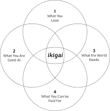

I write this post after several weeks/months of consideration of why I am feeling a burden when I contribute to the FOSS community, mostly the R community. I want to make public some rules I set for myself for future references and in case it helps others.
I use R for my work and I realized I could use it for my interests. With the creativity of a computer language that I know well, I could answer question I had and help others in the process.
As the questions I answered were more general or more community centered I got involved in more meetings and working groups. Some decisions/commitments were carefully considered, and known to be temporal, others were/are more open ended with an unclear end.
I am sure there are several people doing more but after reflection I came to the conclusion that this is not sustainable/worth it for me.
From now on when I contribute something there are 3 reasons I will keep in mind:
It is part of my work or related to it.
When I go to these working groups I do not represent my employer or any comunity. I am not paid for anything of the previous list and I need to recover the hours when I have meetings during working hours.
Here I also include contributions to something that might make help my career. This includes gig jobs or consulting that I am open to do.
It is funny/rewarding.
These contributions might interest me because I find funny, for example plotting a simple tree with ggplot2.
Or because it is rewarding helping someone to solve their problems, such as helping a family member to claim her wage for their overtime.
I learn something.
I don’t like to learn new things for the sake of learning. But I enjoy learning something that could be useful: a technology, a solution, a community or new data I never analyzed. This might be for my personal interest or work related: recently having learn how to parse html/xml helped me at work doing a task in 5 minutes a simple task my boss would have need half an hour or more but I learned it for a hobby project.
If I see a project/proposal doesn’t fit any of these three I will stop contributing/maintaining. I’ll try to avoid commitments that I think that should be done that I could step up or do it but do not fit in these three rules. This includes contributing to books, mentoring, being the glue between different communities or simply sending a PR.
As my time is more stretched with commitments away from the keyword. I feel torn apart between contributing more effectively or stopping. Each hour I spend in a meeting that could/was an email is 2 hours or more that I lose, not only the opportunity cost but also the motivation3 and the time I spent preparing the meeting.
Aside from that and some previous commitments I will finish serving the community. I will no longer prioritize what is good for the community over what is good for me. If they overlap it will be great if it doesn’t, I’m sorry.
.
As you now know you can appeal to either of the three motivations now: Ask me something I might find funny/rewarding, ask me to learn something I could use or simply provide a payment or a way forward for my career.
I am open to consulting or developing something, you can contact me useing the email on the blog.